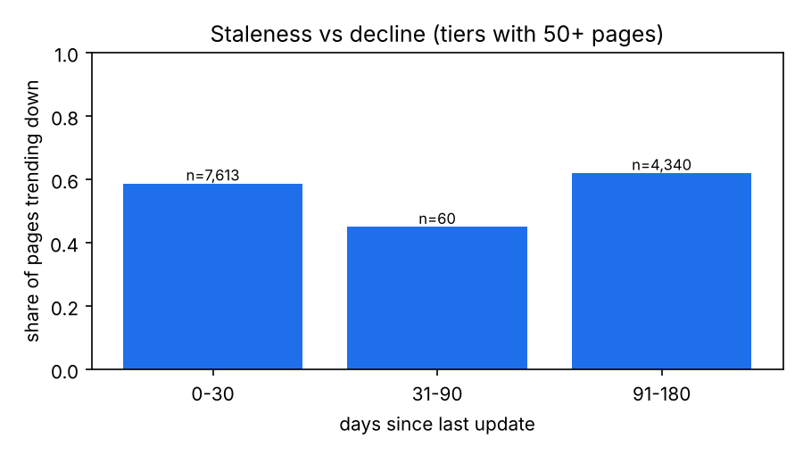
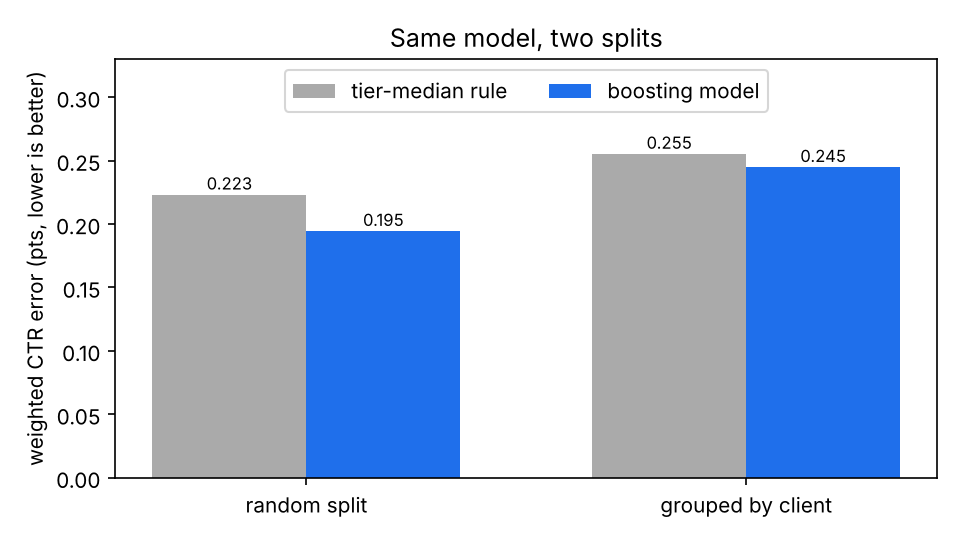
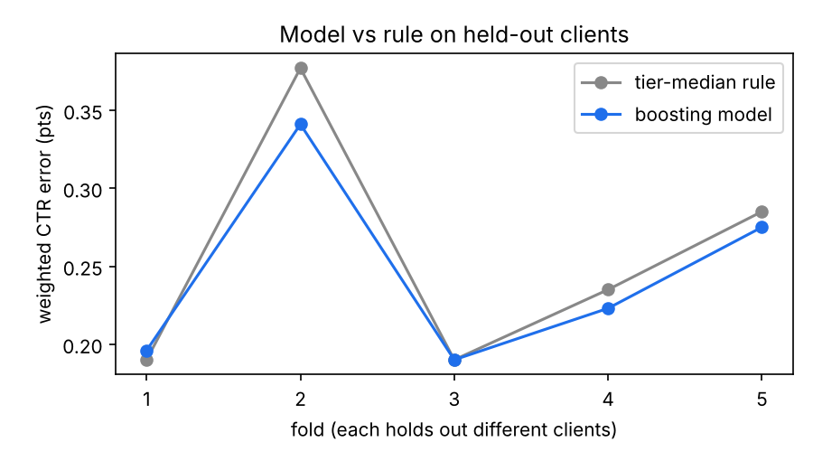
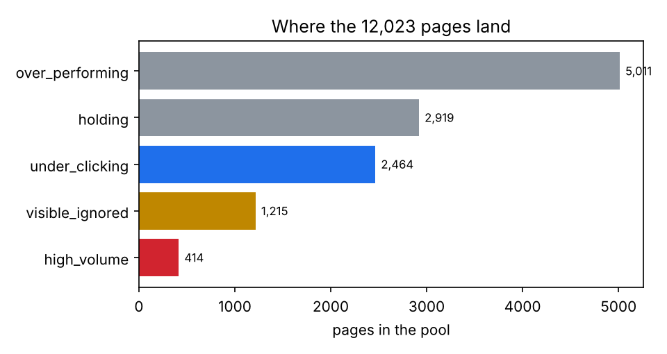

Which pages under-capture clicks? A ranked review queue, tested on held-out clients
Nadim Mahmud · FlyRank ML Internship capstone · Lane 4, CTR / engagement opportunity scoring
1. Introduction: the decision
An SEO editor has time to review perhaps 20 to 50 pages a week. A page that ranks well but draws few clicks has a cheap fix to try: a clearer title, a better description. Editing a title takes far less effort than rewriting an article. But a long list of "low CTR" pages is not a plan, and a wrong call has a cost. A false flag wastes review time and risks rewriting a title that was working. A missed page keeps losing clicks it already earned the ranking for.
So the question is one of order: given what a page looks like today, which should a person read first, and why?
2. Data
The FlyRank ML Internship starter release: one anonymised table with a row per page and 90-day search and analytics measures. I kept pages with a real average position (above 0, up to 20) and at least 500 impressions, because CTR on fewer impressions moves too much on one or two clicks. That leaves 12,023 pages from 28 clients. One client holds about 37% of them. Pages with no position data and pages under the impression floor were left out. No client names, domains, URLs or search queries are used anywhere.
3. Methodology
| Piece | Choice |
|---|---|
| Target | Observed ctr (percent), not a label made by a rule |
| Baseline | Median CTR of the page's position tier |
| Model | Gradient boosting, absolute-error loss, weighted by impressions. Features: position, impressions, content type, intent, word count, page age |
| Validation | 5 folds grouped by client, seed 42. Metric: impressions-weighted mean absolute CTR error |
| Ranking score | Click gap = max(expected CTR − CTR, 0) ÷ 100 × impressions, from out-of-fold predictions |
Leakage checks. CTR is clicks divided by impressions, so clicks_90d cannot be a feature: adding it drops the error to 0.045, which is a leak and not a good model. client_id is out too, since under a random split it lets the model recognise a site. The starter file's own trend fields were never used. No single clean feature predicts CTR on held-out clients much better than the baseline.
A staleness check. I also tested whether pages that go longest without an update decline more often. About 60% of pages in the pool are trending down. Across the whole file the share rises from 0.51 for pages updated in the last 30 days to 0.61 at 91 to 180 days, a modest rise. Inside the pool it is 0.59 against 0.62. Older pages decline a little more, which is too weak to rank on, so staleness is not in the score.

4. Results
| Split | Rule | Model | Model lower by |
|---|---|---|---|
| Random 5-fold (what an unchecked run reports) | 0.223 | 0.195 | 12.8% |
| Grouped by client (what I report) | 0.255 | 0.245 | 4.1% |

Part of what the random split rewarded was recognising a client's pages from its other pages. Adding client_id as a feature lowered the model's random-split error further and did nothing for the rule, which is the sign of a model learning the site instead of the pattern.
Fold by fold, the model is lower in 4 of 5, with one near tie, and it is slightly worse than the rule on page-1 pages. The two methods also build different queues: only 21 of the top 50 pages appear in both. With no future window to test against, I cannot say which queue is right.

5. Limitations and honest framing
- Observed and directional. One 90-day window, 12,023 pages, 28 clients, one of them about 37% of the pool.
- There is no later window, so nothing here shows that a flagged page stays below its expected CTR, or that editing it raises clicks. The click gap is a ranking device, not a forecast of clicks to win back.
- No query data. A low CTR can come from branded searches, a featured snippet, an image pack or an AI answer. None of them are visible in this file.
- The model's edge over a lookup table is small (about 4.1%). The
top_3tier is unreliable on this slice: its median CTR is lower than page 1's. - The largest misses are very high-impression pages the model under-called. A big miss means "look at this page by hand", not "this page is bad".
- Nothing here makes a claim about how any search engine ranks pages.
6. Ranked recommendations
Each page gets an archetype from a plain rule on its own numbers (not a learned cluster), a reason code a reviewer can check by eye, and an action. The editor queue ranks the 3,679 actionable pages by click gap.

| Archetype | Pages | Reason code | Action |
|---|---|---|---|
| Visible, ignored (0 clicks in 90 days) | 1,215 | zero_clicks_visible | Check indexing, canonical and intent first |
| Under-clicking (CTR under half the expected) | 2,464 | ctr_below_expected | Review title and description |
| High-volume (over 50,000 impressions) | 414 | very_high_impressions | Named owner reviews; no edit without sign-off |
| Holding | 2,919 | none | Monitor |
| Over-performing | 5,011 | none | Protect |
What to do first. Work the editor queue from the top, 50 pages a week. Before acting, a person checks the results listing for a snippet or AI answer, whether the page ranks mostly for its brand, whether the title matches the query, and whether the page changed in the last 30 days. The top 50 title-review pages hold about 5.4% of the pool's click gap, which is a ceiling and not a promise. The 414 high-volume pages hold about 39.5% of the gap, which is why they get a person and not an edit.
What should not be automated. Rewriting titles without a human read, any change to a high-volume page without an owner's sign-off, pruning or merging a page because it appears in the queue, quoting the click gap as clicks recovered, and saying an edit caused a change in clicks. Applying the queue to a new site or window means rerunning the checks first.
When to revisit. Rerun each new 90-day window. Fall back to the tier-median rule if the grouped model error rises above 0.294 or stops beating the rule's 0.255. Check the pool filter if more than 10% of the top 50 have zero clicks. Report per client if one client passes 45% of the pool. This is a worked plan, not a production system.
7. Reproducibility
Everything runs from the repo on the starter CSV with seed 42. The notebooks write the receipts in work/outputs/ that every number above traces to.
8. Acknowledgments and data credit
Built on the FlyRank ML Internship dataset, from FlyRank. Thanks to the FlyRank team for the data, the starter notebooks and the review of each week's work.